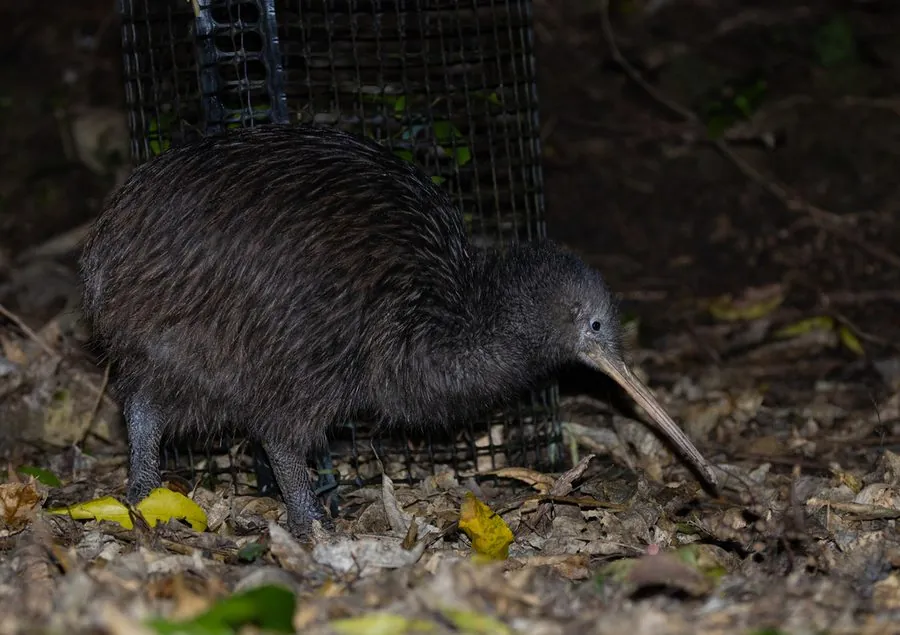

鸟类 · 动物界
北岛褐几维 Apteryx mantelli

新西兰特有的无翼夜行鸟，浑身覆盖毛发状的褐色羽毛，用长喙在落叶层中探寻蚯蚓，是新西兰的国鸟。
- 分类
- 门脊索动物门纲鸟纲目无翼鸟目科无翼鸟科属无翼鸟属
- 栖息环境
- 新西兰北岛的温带森林、灌丛和人工松林，夜间在腐殖层中觅食
- 地理分布
- 新西兰北岛及附近岛屿特有，中国无分布
- 保护级别
- IUCN 易危（VU）；新西兰国鸟，中国无分布
物种志
北岛褐几维体长 40–65 cm，体重 1.4–3.3 kg，雌鸟明显大于雄鸟。它的羽毛呈褐色，没有一般鸟类那种片状的羽枝结构，摸起来像粗糙的毛发；翅膀退化到几乎看不见，胸骨上也没有供飞行肌肉附着的龙骨突。喙细长而下弯，鼻孔长在喙的最前端，腿粗壮有力，脚上只有三个向前的大趾。
北岛褐几维是新西兰北岛及附近岛屿的特有种，栖息在温带森林、灌丛和人工松林中。它昼伏夜出，靠灵敏的嗅觉在腐殖层中探寻蚯蚓、昆虫幼虫、蜘蛛和落果。几维鸟实行一雄多雌或多雄多雌的繁殖方式，雌鸟产下 1 枚巨大的卵，重量约占自身体重的五分之一，由雄鸟孵化约 75–90 天。几维鸟没有翅膀、不会飞行，加上外来哺乳动物捕食和栖息地丧失，野外种群数量不断下降，被世界自然保护联盟列为易危物种，也是新西兰的国鸟。
形态与习性
- 食性蚯蚓、昆虫幼虫、蜘蛛、浆果和落叶层中的无脊椎动物
- 体长40–65 cm
- 体重1.4–3.3 kg，雌鸟更大
- 鸟卵单枚卵重约 400–500 g，约占雌鸟体重的两成
- 繁殖雄鸟孵化约 75–90 天
- 鼻孔鼻孔位于喙的最前端，是唯一如此的鸟类
- 寿命野外约 20–30 年，圈养可超过 40 年
趣味知识
- 几维鸟的鼻孔长在喙尖，是唯一鼻孔位于喙端的鸟类，能直接嗅出落叶层下的蚯蚓。
- 它的羽毛没有羽枝结构，摸起来像毛发，翅膀退化到几乎看不见。
- 几维鸟的蛋大得惊人，约占雌鸟体重的五分之一，是鸟类中比例最大的蛋之一。
- 几维鸟夜间会发出反复的哨音，是新西兰森林中最有代表性的声音之一。